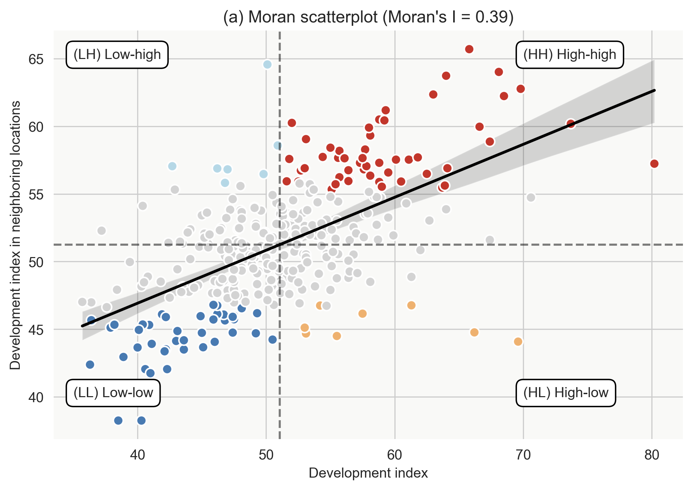
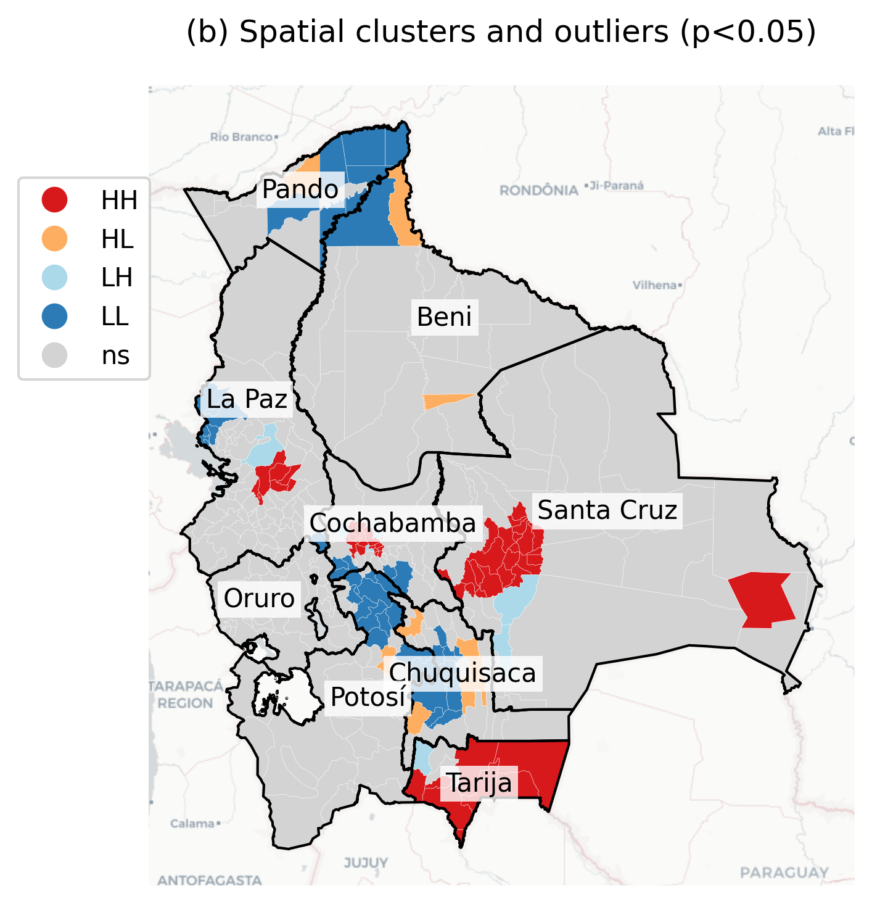
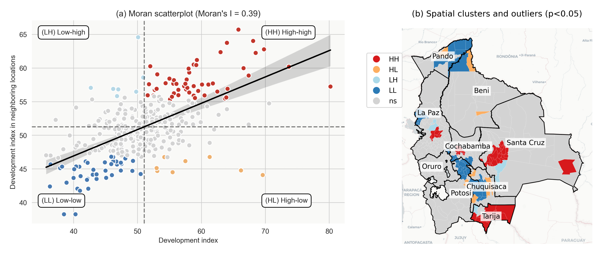

Spatial Autocorrelation in Bolivia’s Municipal Development
Exploratory Spatial Data Analysis (ESDA)
Overview
Research Question:
Is there spatial clustering in Bolivia’s municipal development indicators?
Data:
- 339 municipalities in Bolivia
- Development Index (IMDS)
- Range: 35.7 to 80.2
- Mean: 51.05, Median: 50.50
Methods:
- Spatial weights (K-nearest neighbors, k=6)
- Global spatial autocorrelation (Moran’s I)
- Local spatial autocorrelation (LISA)
- Cluster and outlier analysis
Spatial Distribution of Development
Interactive Map: Development Index (IMDS) by Municipality
Key observations:
- Wide variation across municipalities (35.7 - 80.2)
- Highest development: Urban centers (La Paz, Santa Cruz)
- Lowest development: Rural areas in Pando, Beni
- Clear geographic patterns visible
Data availability:
- Interactive HTML map:
output/mapBolivia339imds.html
IMDS Statistics:
- Mean: 51.05
- Median: 50.50
- Std Dev: 7.94
- Min: 35.70 (Pando)
- Max: 80.20 (La Paz metro)
Spatial Weights Matrix
K-Nearest Neighbors (k=6)
Why K-Nearest Neighbors?
- Captures spatial relationships between municipalities
- Each municipality connected to 6 nearest neighbors
- Row-standardized weights (sum to 1)
- Accounts for irregular spatial units
Properties:
- Symmetric spatial connections
- Balances local and regional effects
- Robust to edge effects
Spatial Lag:
Created variable Wimds:
- Development index in neighboring municipalities
- Weighted average of 6 nearest neighbors
- Used for spatial autocorrelation analysis
Global Spatial Autocorrelation
Moran’s I Statistic
Results:
- Moran’s I = 0.39
- p-value = 0.001 (highly significant)
- Positive spatial autocorrelation detected
Interpretation:
- Municipalities with similar development levels cluster together
- High-development areas near other high-development areas
- Low-development areas near other low-development areas
What does Moran’s I = 0.39 mean?
- Moderate positive spatial correlation
- Value ranges from -1 to +1
- 0.39 indicates clear clustering pattern
- Statistically significant (p < 0.001)
- Not random spatial distribution
Moran Scatterplot

Four quadrants identify:
- HH (High-High): High development near high development (red)
- LL (Low-Low): Low development near low development (blue)
- HL (High-Low): High development surrounded by low (orange)
- LH (Low-High): Low development surrounded by high (light blue)
Local Spatial Autocorrelation (LISA)
Local Indicators of Spatial Association
Purpose:
- Identify specific locations of clustering
- Detect spatial outliers
- Map local patterns (not just global trend)
Significance level:
- p < 0.05 for identifying clusters
- Permutation tests (999 iterations)
- Seed = 12345 for reproducibility
Cluster types found:
- High-High (Hotspots)
- Urban centers, major cities
- Low-Low (Coldspots)
- High-Low (Outliers)
- Developed municipalities in underdeveloped regions
- Low-High (Outliers)
- Underdeveloped municipalities near developed areas
LISA Cluster Map

Key patterns:
- Red (HH): Urban corridors - La Paz, Cochabamba, Santa Cruz
- Blue (LL): Pando, northern Beni, remote Potosí
- Orange (HL): Isolated development centers
- Light blue (LH): Peripheral municipalities near cities
Combined LISA Analysis

Left panel: Moran scatterplot showing relationship between development and spatial lag
Right panel: Geographic distribution of clusters and outliers across Bolivia
High-High Clusters (Hotspots)
Characteristics:
Location:
- Department capitals: La Paz, Cochabamba, Santa Cruz
- Urban corridors
- Economic centers
Development indicators:
- High IMDS scores (>58)
- Strong neighboring effects
- Positive spillovers
Implications:
- Agglomeration economies
- Regional growth poles
- Infrastructure concentration
- Service availability
Examples:
- Coroico (IMDS: 58.8)
- Cliza (IMDS: 60.5)
- Caraparí (IMDS: 63.0)
Low-Low Clusters (Coldspots)
Characteristics:
Location:
- Northern departments (Pando, Beni)
- Remote rural areas
- Low population density regions
Development indicators:
- Low IMDS scores (<45)
- Surrounded by similar municipalities
- Reinforcing underdevelopment
Challenges:
- Limited infrastructure
- Geographic isolation
- Low service access
- Poverty traps
Policy implications:
- Need for coordinated regional interventions
- Infrastructure investments
- Breaking isolation
Spatial Outliers
High-Low Outliers (Orange):
- High development in underdeveloped regions
- Often mining/resource centers
- Limited spillover effects
Characteristics:
- Enclave economies
- Resource extraction
- Weak regional linkages
Low-High Outliers (Light Blue):
- Underdeveloped areas near cities
- Inequality at borders
- Marginalized communities
Implications:
- Need for inclusive growth
- Reducing spatial inequality
- Strengthening connections
Statistical Summary
Cluster Distribution:
| Not significant |
~240 |
70.8% |
51.2 |
| High-High |
~40 |
11.8% |
59.8 |
| Low-Low |
~35 |
10.3% |
42.5 |
| High-Low |
~12 |
3.5% |
56.3 |
| Low-High |
~12 |
3.5% |
45.7 |
Key finding: About 30% of municipalities show significant spatial clustering patterns.
Policy Implications
For High-High Clusters:
- Leverage growth poles
- Improve connectivity to neighbors
- Share best practices
- Regional development strategies
For Low-Low Clusters:
- Coordinated interventions
- Regional infrastructure
- Break isolation
- Multi-municipality programs
For Spatial Outliers:
- HL: Strengthen regional linkages
- LH: Address inequality at borders
- Inclusive development
- Spillover mechanisms
General:
- Spatial perspective crucial
- Neighbor effects matter
- Regional coordination needed
Methodology Notes
Spatial Weights:
- K-Nearest Neighbors (k=6)
- Row-standardized
- Captures immediate neighborhood
Statistical Tests:
- Global Moran’s I: Overall spatial pattern
- Local Moran’s I (LISA): Local patterns
- Permutation tests (999 iterations)
- Significance level: α = 0.05
Software:
- Python: GeoPandas, PySAL, libpysal
- Spatial statistics: esda, splot
- Visualization: matplotlib, folium, plotly
Key Findings
- Significant spatial clustering in Bolivia’s municipal development
- Moran’s I = 0.39 (p < 0.001)
- Urban corridors form high-development clusters
- La Paz, Cochabamba, Santa Cruz regions
- Rural periphery shows persistent low-development clustering
- ~30% of municipalities in significant spatial clusters
- Indicating strong neighbor effects
- Spatial outliers highlight inequality and enclave economies
- Need for inclusive, spatially-aware policies
Future Research
Extensions:
- Temporal analysis of spatial patterns
- Determinants of cluster formation
- Spillover mechanisms
- Policy evaluation with spatial methods
Methods:
- Spatial regression models
- Geographically Weighted Regression (GWR)
- Spatial panel data analysis
- Causal inference with spatial methods
Data:
- Time series of development indicators
- Infrastructure networks
- Economic flows between municipalities
Data and Reproducibility
Data Source:
Code:
- Jupyter notebook:
02_esda.ipynb
- Python environment:
claude4data
- All packages in
requirements.txt
Outputs:
- Interactive map:
mapBolivia339imds.html
- LISA scatterplot:
lisaSC.png
- LISA cluster map:
lisaMAP.png
- Combined figure:
lisa.png
Project:
- Repository:
claude4data
- Reproducible workflow
- Open source tools
Conclusion
Main Takeaway:
Bolivia’s municipal development exhibits strong spatial dependence (Moran’s I = 0.39), with clear clustering patterns that demand spatially-informed policy interventions.
For Researchers:
- Spatial methods essential
- Neighbor effects matter
- Local patterns reveal heterogeneity
- LISA identifies intervention targets
For Policymakers:
- Regional coordination critical
- One-size-fits-all policies insufficient
- Address both clusters and outliers
- Leverage positive spillovers
- Break poverty traps in coldspots
Contact:
Carlos Mendez
Project: claude4data
🛠️ Generated with Claude Code